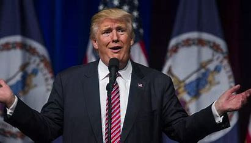

9月3日，外交部发言人华春莹主持例行记者会。有记者提问，美国国务院9月2日发表声明，要求中国驻美高级外交官访问美国高校和会见美国地方政府官员、中国驻美使领馆在馆外举办50人以上的文化活动均需报美国国务院审批。请问中方对此有何评论？
华春莹表示，去年10月以来，美国国务院对中国驻美使领馆及其工作人员在美正常履职不断设置限制。有关做法严重违反国际法和国际关系基本准则，严重干扰中美关系和双边正常交往。根据《维也纳外交关系公约》、《维也纳领事关系公约》和《中美领事条约》有关规定，中美双方应该为对方驻各自国家外交领事人员依法履职提供充分的便利。
华春莹强调，中方一贯依法依规为美国驻华使领馆人员在华进行正常活动提供便利。反观美方，美国去年10月、今年6月两次对中国驻美外交领事人员活动提出提前报备要求，这次又进一步要求报批，甚至限制他们同美国地方官员私人和社交往来。这些行径完全违背国际法和国际关系基本准则以及《中美领事条约》，于法无据、于理不合、于情不通。
华春莹指出，这反映出美国反华势力已经丧失理性和自信，得了“反华妄想症”，必将继续受到各界有识之士的强烈谴责和反对。中美关系对中美两国和世界都很重要，中美双方任何时候都应该保持沟通渠道的畅通，中国驻美使领馆将继续与美国社会各界保持正常的交往，中方将继续支持两国社会各界开展正常交流合作。我们敦促美国国务院立即停止有关的错误决定，停止阻挠两国正常人员往来，停止破坏中美关系。中方将根据形势发展作出正当、必要回应。
(本文来自澎湃新闻，更多原创资讯请下载“澎湃新闻”APP)返回搜狐，查看更多
声明：该文观点仅代表作者本人，搜狐号系信息发布平台，搜狐仅提供信息存储空间服务。